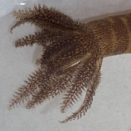
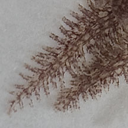
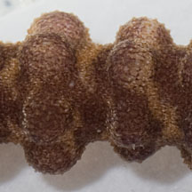
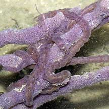
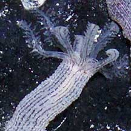
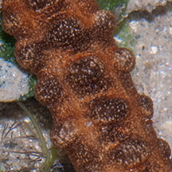
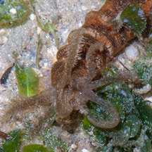

|
|
| sea cucumbers text index | photo index |
| Phylum Echinodermata > Class Holothuroidea > Order Apodida > Family Synaptidae |
| Synaptid
sea cucumbers Family Synaptidae updated Apr 2020 Where seen? These sea cucumbers appear to be seasonally abundant and are found on many of our shores. When in 'season', large numbers of small skinny ones (5-10cm long) may be seen draped around sponges and other encrusting animals. In the seagrass meadows, thicker very long ones (10-12cm, to 30cm long) are entwined among the seagrasses. They might even be seen crawling (slowly) on the sand. |

| Features: Synaptids have a thin
body wall and are more delicate than other sea cucumbers. Synaptid
sea cucumbers don't have tube feet. Instead, they may stick to things
with tiny hooked sclerites that poke out of their soft bodies. This
is why they stick to our hands if we touch them. They have thin body
walls and are fragile, so we should not handle them. Among the longest sea cucumbers is a synaptid, Synapta maculata, which can reach up to 3m long! Sometimes mistaken for worms. Here's more on how to tell apart worm-like animals. |
|
 Feeding tentacles. Cyrene Reef, Aug 12 |
 |
 Body covered with tiny hooked sclerites. |
| Some Synaptid sea cucumbers on Singapore shores |
 Usually many seen on a sponge. |
 Feeding tentacles |
 Usually seen alone. With distinct stripes between 'bobbles'. |
 Feeding tentacles |
 |
 |
|
| Mangrove synaptid sea cucumber | Usually seen alone. No 'bobbles. | Feeding tentacles |
| Family Synaptidae recorded for Singapore From Ong J. Y. & H. P. S. Wong. Sea cucumbers (Echinodermata: Holothuroidea) from the Johor Straits, Singapore and J. Y. Ong, I. Wirawati & H. P. S. Wong. 29 June 2016. Sea cucumbers (Echinodermata: Holothuroidea) collected from the Singapore Strait. ^from WORMS +Other additions (Singapore Biodiversity Record, etc)
|
|
Links
References
|